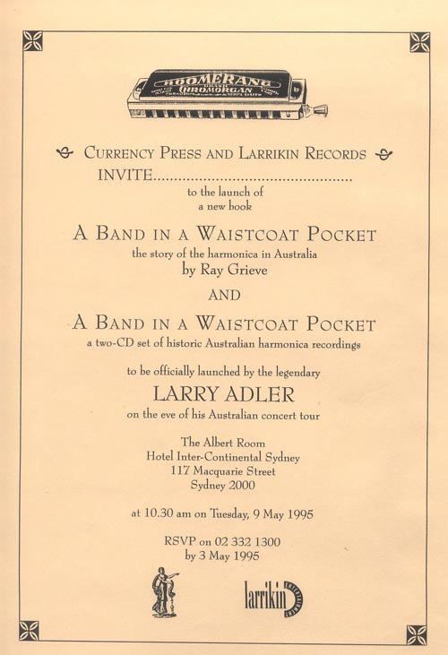
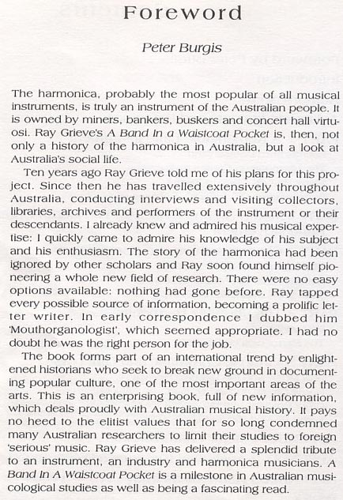
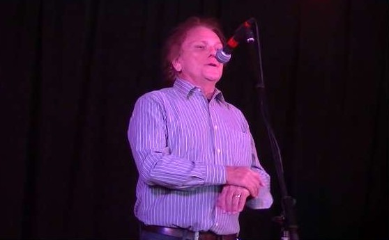
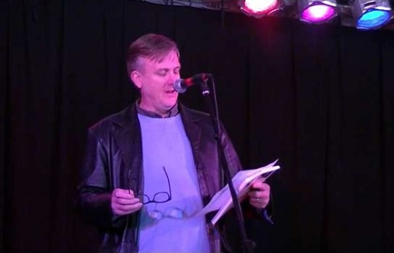

A Band in a Waistcoat Pocket Launch Flyer
Legendary American harmonica player, the late Larry Adler, launched the book and CD at the Inter-Continental in Sydney.

Foreword to A Band in a Waistcoat Pocket by Peter Burgis.
At the time of writing, Peter Burgis is Director of the Australian Institute of Recorded Sound in Port Macquarie, NSW, and a past vice-president of the International Association of Sound Archives. He was formerly head of the Sound Recording Collection Services at the National Library of Australia and the National Film and Sound Archive in Canberra.

Images from the launch of Boomerangs and Crackajacks at the 2014 National Folk Festival.

Ray Grieve, author
Bob Bolton playing the harmonica

Kevin Bradley from the National Library, launching the book
2014 National Folk Festival